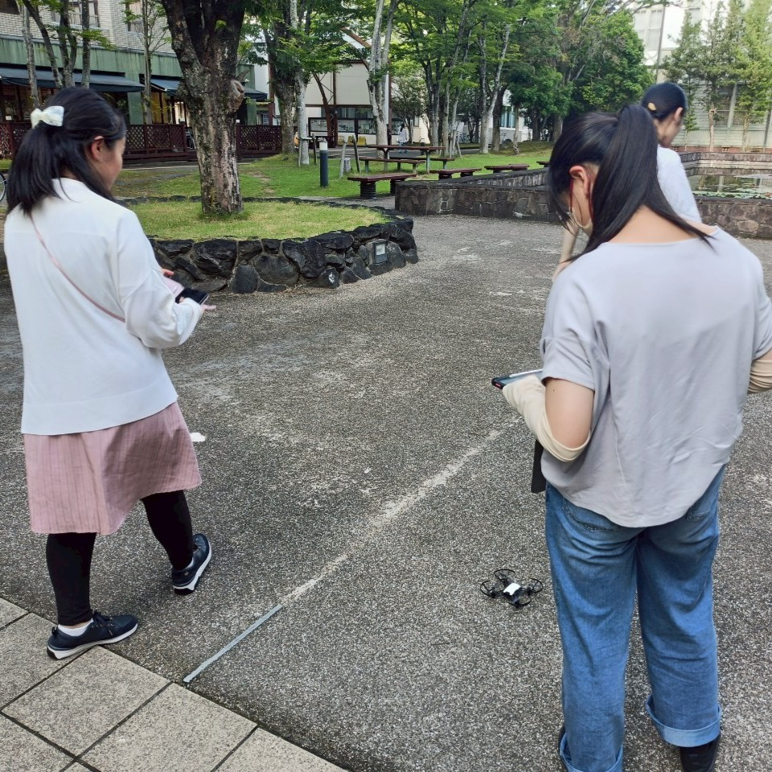

奈良女子大学の四季の様子はいかがでしたか？
これらの写真からもわかるように、ドローンカメラを使用することで高い場所や水域の上からの撮影など、通常よりも広範囲での撮影が可能となります。
このようにして、人の足では立ち入れないような場所での植生調査などの研究活動においてドローンが用いられているのです。
今回使用したドローンはトイドローンと呼ばれる比較的小さなものになります。タブレット端末などにインストールした専用のアプリで操縦・撮影しました。
これらの写真からもわかるように、ドローンカメラを使用することで高い場所や水域の上からの撮影など、通常よりも広範囲での撮影が可能となります。
このようにして、人の足では立ち入れないような場所での植生調査などの研究活動においてドローンが用いられているのです。
今回使用したドローンはトイドローンと呼ばれる比較的小さなものになります。タブレット端末などにインストールした専用のアプリで操縦・撮影しました。
